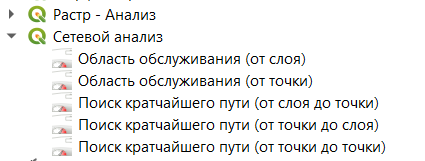
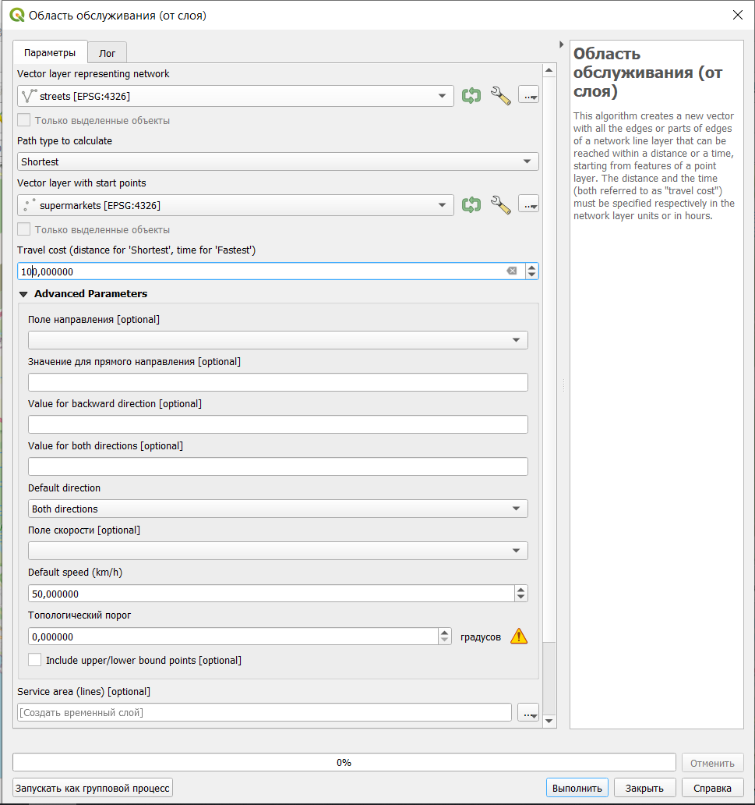
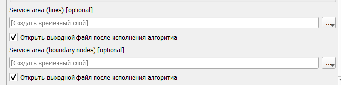
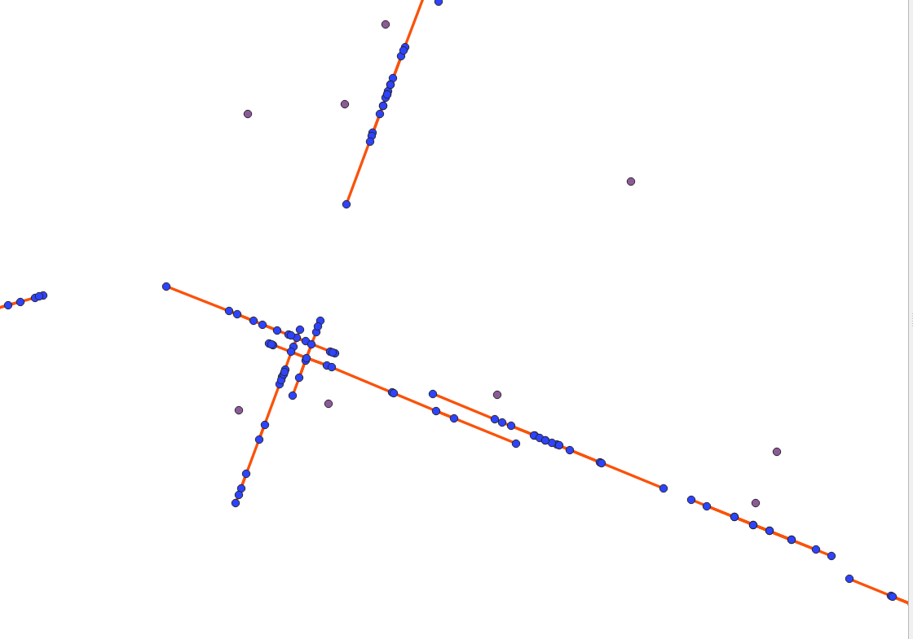
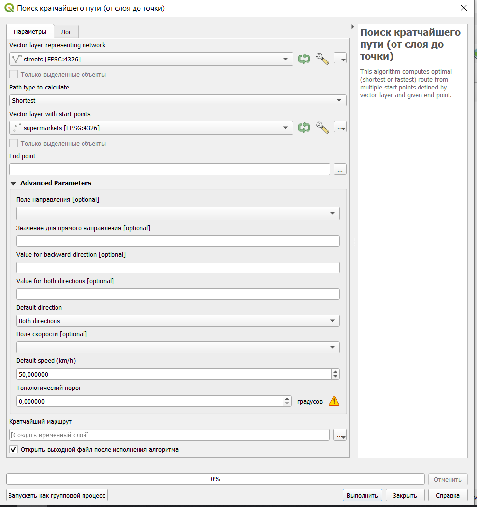

13 Сетевой анализ
Сетевой анализ построен на теории графов.
При использовании сетевого анализа улично-дорожная сеть рассматривается как набор узлов (перекрестков), которые соединены между собой ребрами (сегментами улиц или дорог между перекрестками). Передвижение по графу осуществляется только по ребрам, перемещение от ребра к ребру происходит через узлы.
Граф может быть направленным (если по нему можно передвигаться только в определенных направлениях) или ненаправленным (по графу можно передвигаться в любом направлении).
В ГИС сетевой анализ используется для решения двух основных задач: поиск кратчайшего пути и определение области обслуживания объекта.
С сетевым анализом так или иначе сталкивались практически все: каждый раз, когда вы строите свой маршрут в навигационном приложении, для вас осуществляется сетевой анализ с учетом целого ряда параметров (характеристики улично-дорожной сети, скорость передвижения, наличие ограничений в передвиженни, наличие пробок и прочие).
Для осуществления сетевого анализа существует большое число сервисов и плагинов, а также могут применяться стандартные средства QGIS.
Главный недостаток использования сторонних сервисов для задач сетевого анализа в том, что у вас нет конкретной информации о параметрах улично-дорожной сети, тогда как при использовании стандартных инструментов или инструментов, где вы сами задаете параметры сети, вы четко знаете как и каким образом осуществляется передвижение по исследуемой территории.
В качестве исходных данных для работы можно использовать скачанный с overpass-turbo.eu слой с улицами (городские и межрайонные магистрали), который лежит по ссылке и слой с расположением супермаркетов, который доступен по ссылке (как открыть табличные данные в QGIS описано в 3.1)
Либо можно самостоятельно скачать данные с overpass-turbo.eu (как это сделать было рассмотрено в 6)
13.1 Сетевой анализ стандартными средствами QGIS
Для сетевого анализа в Панели инструментов анализа есть отдельный пункт.

Основные инструменты здесь - это Область обслуживания и Поиск кратчайшего пути.
13.1.1 Область обслуживания
Доступно два варианта построения области обслуживания: от слоя (то есть от объектов точечного слоя) и от точки (то есть от одной заданной пользователем точки).
При построении области обслуживания от слоя самыми важными характеристиками являются:
слой, отображающий улично-дорожную сеть;
слой, содержащий точечные объекты, для которых строится область обслуживания (могут использоваться не все объекты слоя, а только выделенные);
travel cost - расстояние или время для определения области обслуживания. Расстояние задается, если выбран кратчайший путь, время (в часах), если выбран наиболее быстрый путь.

В качестве дополнительных параметров могут быть заданы:
поле направления - поле, в котором указано, в каком направлении можно передвигаться по определенному сегменту (в случае, если есть информация о том, какие улицы являются одно- или двухсторонними и в каком направлении по ним можно передвигаться);
значение для прямого направления, для обратного направления и для обоих направлений - какие значения в этом поле соответствуют каким направлениям;
направление по умолчанию - если граф является направленным и по нему можно передвигаться только в одном из направлений (по умолчанию по графу можно передвигаться в обоих направлениях);
поле скорости - поле, в котором указана скорость передвижения по конкретным сегментам сети;
скорость по умолчанию - скорость, с которой можно передвигаться по сети, если не задано поле скорости со значениями для каждого сегмента.
В результате выполнения могут быть получены два варианта результата: слой с линиями, в который входят сегменты сети, попадающие в область обслуживания, и слой с узлами, в который включаются все узлы сети, попадающие в область обслуживания и узлы, показывающие крайние точки области обслуживания (по умолчанию этот слой пропускается).


Область обслуживания для точки рассчитывается аналогично за исключением того, что вместо слоя нужно указать положение исходной точки. Это можно сделать введя ее координаты или просто указав на карте.
13.1.2 Поиск кратчайшего пути
Поиск кратчайшего пути доступен в нескольких вариантах:
от слоя к точке - от объектов точечного слоя (могут использоваться только выделенные объекты) к заданной точке;
от точки к точке - поиск пути между заданными точками;
от точки к слою - от заданной точки к объектам точечного слоя (могут использоваться только выделенные объекты).
Параметры инструмента аналогичны параметрам области обслуживания, с некоторыми особенностями.

Следует помнить, что при поиске кратчайшего пути не всегда существует путь между двумя точками.
В результате выполнения функции будет получен слой с линейными объектами, которые показывают найденные кратчайшие пути.